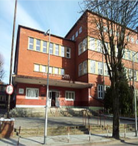

Technikum mechaniczne w Elblągu
Placówka o wieloletniej tradycji, powstała w 1946 roku. Drugie najabrdziej uznane technikum w Eblągu
zaraz po Zespole Szkół Techniczno Informatycznych tzw. ZSTI.

Technikum mechaniczne od strony ul. Komeńskiego
Opis
W technikum mechanicznym uczniowie zdobywają wiedzę i umiejętności z zakresu mechaniki, elektrotechniki, automatyki, informatyki, CAD/CAM, projektowania i konstrukcji maszyn oraz obróbki skrawaniem i spawania metali. W ramach zajęć praktycznych uczniowie korzystają z nowoczesnego sprzętu i narzędzi, które pozwalają na realizację projektów i zadań związanych z branżą mechaniczną. Po ukończeniu technikum mechanicznego absolwenci mają możliwość podjęcia pracy w zakładach produkcyjnych, firmach naprawczych, serwisach maszyn i urządzeń, a także w biurach projektowych lub na stanowiskach kierowniczych. Mogą również kontynuować naukę na studiach wyższych, na kierunkach związanych z mechaniką, automatyką, elektrotechniką, inżynierią produkcji lub zarządzaniem.Ciekawostki
- Mars od tyłu to sram